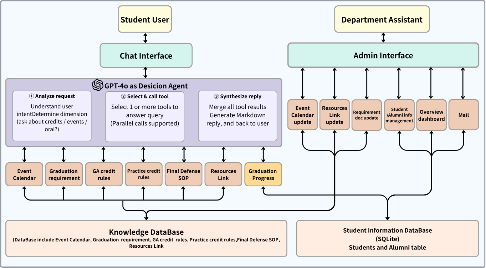
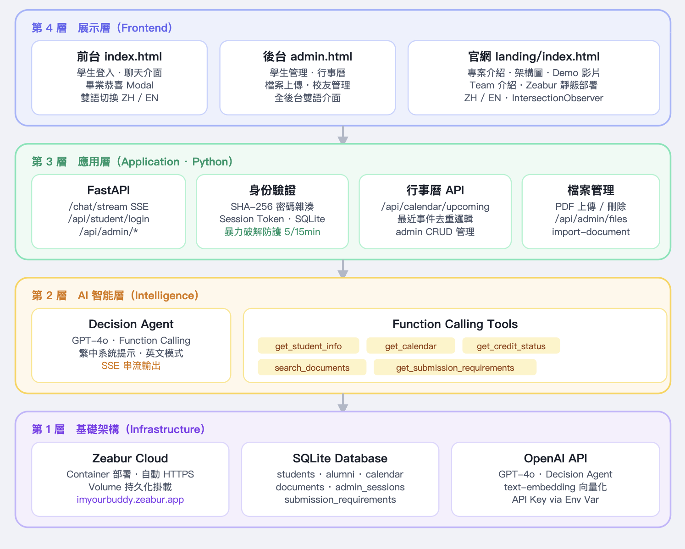

In our four-person team, I served as Product Owner and lead systems engineer, turning the team's product concept into a fully working, demo-able, deployed system. My work covered the whole lifecycle — from requirements planning through technical integration to launch:
關於 Yun 的作品集，直接問我